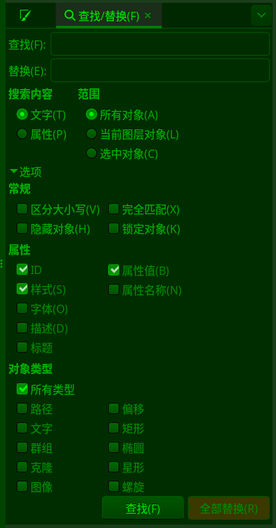

⇨查找/替换
快捷键： Ctrl+F
此命令会打开查找/替换对话框。
 查找/替换对话框
平时我们查找或者搜索最多的应该是文字，比如在网页上搜索自己感兴趣人名关键字，或者城市关键字，等等。
这个对话框里除了可以搜索文字以外，还可以搜索对象的属性。例如，有一个矩形的填充颜色的色值是#ff0000，那么我们就可以按色值#ff0000来查找此对象(这对于复杂的图形来说非常有效)：
在查找框中输入色值#ff0000；
搜索内容选择属性，不要选择文字；
范围选择所有对象；
常规可以清空；
属性选择样式或者属性值；
对象类型选择所有类型。
参数说明：
查找：输入想要搜索的关键字，比如文字，或者属性值，或者字体名称等等。
替换：输入用于替换的内容。
搜索内容：inkscpae把查找对象分为两大类，一类是我们比较熟悉的文字，另一类是我们平时不常使用的属性。
属性的范畴比较广，比如填充的颜色色值、使用字体的字体名称、ID名称、属性值等等，都可以被搜索。
范围：
所有对象：全文档搜索。
当前图层对象：只在当前图层搜索，忽略其它图层。
选中对象：只在选中的对象中搜索，忽略未选中的对象。
常规：
区分大小写：关键词是否区分大小写，勾选后会区分。这里不仅是指文字搜索，也包括属性搜索，比如ID名称。
完全匹配：属性值或其它字符串如果不完全匹配，则不会被搜索到。除非您确定，否则不建议勾选此选项。
对于文字对象，如果一个文字对象是一串文字，那么完全匹配搜索需要把整段文字全部输入到查找框，包括标点符号。
对于属性对象，需要在查找框中输入完整的属性。比如一个对象的填充色值是#ff0000，那么只输入#ff0000是无法搜索到该对象的，必须输入完整的属性内容。填充是样式属性，英文是style，您可以选中某个对象，然后打开菜单【编辑⇨XML编辑器】，就能看到该对象的style内容，类似fill:#008080;stroke-width:2.55584204;stroke:#ff0000，需要把这一长串全部输入才能搜索得到。
隐藏对象：搜索时会搜索隐藏对象，不勾选则无法搜索到隐藏对象。
锁定对象：搜索时会搜索锁定对象，不勾选则无法搜索到锁定对象。
属性：指定具体的属性类别。这里有多个类别，我们稍微说一下描述。描述是对象本身的附加内容，选中一个对象，点击菜单【对象⇨对象属性】，就能打开对象属性对话框，对话框里可以输入此对象的描述信息，类似编程过程中使用的注释。如果您的文档是一个复杂的项目，或者是一个大型的项目，那么利用好这里的描述会非常有帮助。描述内容是可以被查找/搜索的。
对象类型：
所有类型：勾选后，可以搜索任何类型的对象，且下面的选项不可用。取消勾选后，下面的对象变为可用。
路径：取消所有类型后可激活此项，激活表示搜索对象包括路径对象。一具矩形对象如果转成路径对象，那么只能按路径对象搜索，无法再按矩形搜索。
文字：取消所有类型后可激活此项，激活表示搜索对象包括文字对象。文字转路径后，只能按路径对象搜索，无法再按文字对象搜索。
群组：取消所有类型后可激活此项，激活表示搜索对象包括群组对象。
克隆：取消所有类型后可激活此项，激活表示搜索对象包括克隆对象。
图像：取消所有类型后可激活此项，激活表示搜索对象包括位图对象。嵌入位图和链接位图都包括。
偏移：取消所有类型后可以激活此项，激活表示搜索对象包括偏移对象。偏移对象是做了偏移操作的对象(菜单【路径⇨向内偏移/向外偏移/动态偏移/链接偏移】)。一个矩形对象做了偏移操作后，就不能再按矩形对象查找，只能按偏移对象查找。
矩形：取消所有类型后可激活此项，激活表示搜索对象包括矩形对象，包括正方形对象。转为路径的矩形，只能按路径对象搜索。
椭圆：取消所有类型后可激活此项，激活表示搜索对象包括椭圆对象及圆形对象和弧形对象。转为路径的椭圆，只能按路径对象搜索。
星形：取消所有类型后可激活此项，激活表示搜索对象包括星形对象及多边形对象。转为路径的星形，只能按路径对象搜索。
螺旋：取消所有类型后可激活此项，激活表示搜索对象包括螺旋形对象。转为路径的螺旋对象，只能按路径对象搜索。
最近一次更新：2024-07-21